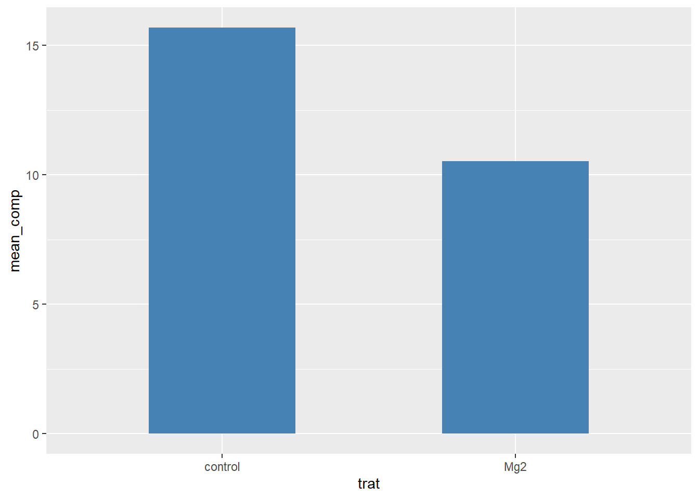

library(datapasta)
library(tidyverse)
library(janitor)
library(ggthemes)
library(gsheet)Gráficos com ggplot - Parte 2
Bibliotecas
Importação de dados
Uso do pacote datapasta para importar dados (vetores, tabelas) para dentro do R:
Copiar dados da internet -> Addins -> paste as tribble
Site: https://escritacientifica.sc.usp.br/estatisticas/estatisticas-por-paises/
visitas <- tibble::tribble(
~V1, ~V2, ~V3,
1L, "Uruguay", 1L,
2L, "Timor-Leste", 1L,
3L, "Singapore", 1L,
4L, "Poland", 1L,
5L, "Pakistan", 1L,
6L, "Malaysia", 1L,
7L, "Italy", 1L,
8L, "India", 1L,
9L, "Finland", 1L,
10L, "Egypt", 1L,
11L, "China", 1L,
12L, "Cape Verde", 1L,
13L, "Bolivia", 1L,
14L, "Austria", 1L,
15L, "Argentina", 1L,
16L, "Peru", 2L,
17L, "Paraguay", 2L,
18L, "Chile", 2L,
19L, "France", 3L,
20L, "Ecuador", 3L,
21L, "Netherlands", 4L,
22L, "United Kingdom", 5L,
23L, "Hungary", 5L,
24L, "Germany", 5L,
25L, "Colombia", 8L,
26L, "(not set)", 12L,
27L, "Spain", 16L,
28L, "Angola", 19L,
29L, "United States", 23L,
30L, "Portugal", 33L,
31L, "Mozambique", 43L,
32L, "Brazil", 4303L
)pak é um pacote que instala pacotes de outros repositórios além do CRAN
#install.packages("pak")
#pak::pkg_install("Icens")
#pak::pkg_install("emdelponte/r4pde")Importação dos dados
Conjunto de dados do site R4PDE (“https://r4pde.net/temporal-fitting”)
pepper <-
tribble(
~t, ~`1`, ~`2`, ~`3`,
0, 0.08, 0.001, 0.001,
7, 0.13, 0.01, 0.001,
14, 0.78, 0.09, 0.01,
21, 0.92, 0.25, 0.05,
28, 0.99, 0.8, 0.18,
35, 0.995, 0.98, 0.34,
42, 0.999, 0.99, 0.48,
49, 0.999, 0.999, 0.74
)Mudando o formato da tabela
Para permitir a visualização dos dados através do ggplot é importante que os dados estejam no formato correto. A função pivot_longer permite passar uma tabela que está no formato largo para o formato longo. De igual modo, a função pivot_wider permite transformar a tabela do formato longo para formato largo.
pepper1 <- pepper |>
pivot_longer(2:4,
names_to = "epidemic",
values_to = "inc")Visualização dos dados
Agora com os dados transformados é possível visualizar no ggplot.
Vamos utilizar a função annotate para colocar informações no gráfico (etiquetas, equações…).
Como já temos os nº das linhas dentro do próprio gráfico não precisa da legenda, por isso legend.position = "none", para tirar a legenda.
pepper1 |>
ggplot(aes(t, inc, color = epidemic))+
geom_point()+
geom_line()+
annotate(geom = "text", x = 12.5, y = 0.80, label = 1)+
annotate(geom = "text", x = 26, y = 0.80, label = 2)+
annotate(geom = "text", x = 41, y = 0.50, label = 3)+
theme(legend.position = "none")Tabela de contingência
Importação dos dados
cr <- read_csv("https://raw.githubusercontent.com/emdelponte/paper-coffee-rust-Ethiopia/master/data/survey_clean.csv")Esquematizando a tabela
Vai fazer uma contagem de uma váriavel categórica (quantas ocorrências tem) através da função count. Função interessante para fazer um sumário de variáveis categóricas de forma rápida.
Também podemos usar a função tabyl do pacote janitor para fazer a contagem - cruzando as variaveis (ex: zone e region) temos a tabela de contigência.
As tabelas de contingência de frequências relativas mostram que porcentagem dos dados se encaixa em cada categoria.
cr |>
count(region, zone)# A tibble: 9 × 3
region zone n
<chr> <chr> <int>
1 Oromia Bale 30
2 Oromia Ilu AbaBora 45
3 Oromia Jimma 45
4 Oromia West Wellega 45
5 SNNPR Bench Maji 45
6 SNNPR Gedio 45
7 SNNPR Keffa 45
8 SNNPR Sheka 45
9 SNNPR Sidama 60cr |>
tabyl(zone, region) zone Oromia SNNPR
Bale 30 0
Bench Maji 0 45
Gedio 0 45
Ilu AbaBora 45 0
Jimma 45 0
Keffa 0 45
Sheka 0 45
Sidama 0 60
West Wellega 45 0cr |>
tabyl(cultivar, region) cultivar Oromia SNNPR
Improved 23 60
Local 50 66
Mixture 92 114cr |>
tabyl(cultivar, farm_management) #formato largo cultivar Intensive Minimal Moderate Unmanaged
Improved 83 0 0 0
Local 0 10 4 102
Mixture 82 59 65 0 #formato longo, estes que usaremos para fazer gráficos com o ggplot:
cr2 <- cr |>
count(farm_management, cultivar)Visualização dos dados com ggplot
cr2 |>
ggplot(aes(cultivar, n, fill = farm_management, label = n))+
geom_col(position = "dodge2")+
scale_fill_canva()+
theme_bw()+
theme(strip.text.x = element_blank(),
legend.position = "top")+
geom_text(position = position_dodge(width = 0.9))+
facet_wrap(~cultivar, scale = "free_x")
mg <- gsheet2tbl("https://docs.google.com/spreadsheets/d/1aID5Dh6PlBVCKzU1j7k-WA6zuWQWE2NhtWEgdJtt5iA/edit?usp=sharing")
# Com as barras podemos ver o valor médio
mg |>
group_by(trat) |>
summarise(mean_comp = mean(comp)) |>
ggplot(aes(trat, mean_comp))+
geom_col(fill = "steelblue", width = 0.5)
#Com o jitter podemos ver a dispersão dos dados já que cada ponto é referente a uma observação.
mg |>
ggplot(aes(trat, comp))+
geom_jitter(width = 0.1)mg |>
group_by(trat) |>
summarise(mean_comp = mean(comp),
sd_comp = sd(comp)) |>
ggplot(aes(trat, mean_comp))+
#geom_col(fill = "steelblue", width = 0.5)+
geom_point(size = 3)+
ylim(4, 20)+
geom_errorbar(aes(ymin = mean_comp - sd_comp,
ymax = mean_comp + sd_comp),
width = 0.05)+
annotate(geom = "text",
x = 1, y = 17.5,
label = "*")# quando é grafico de contagem de elementos tem que começar do 0. Nesse caso o y começou do 5 pq é para dar noçao melhor dos valores. Se for com o geom_col tem que começar do 0.